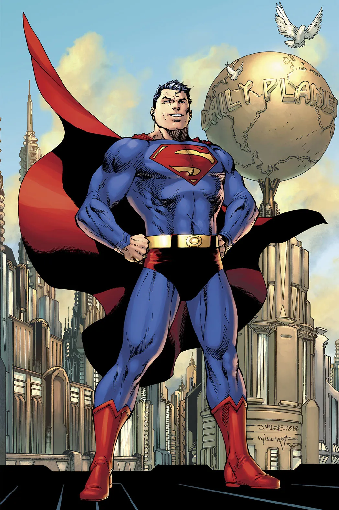
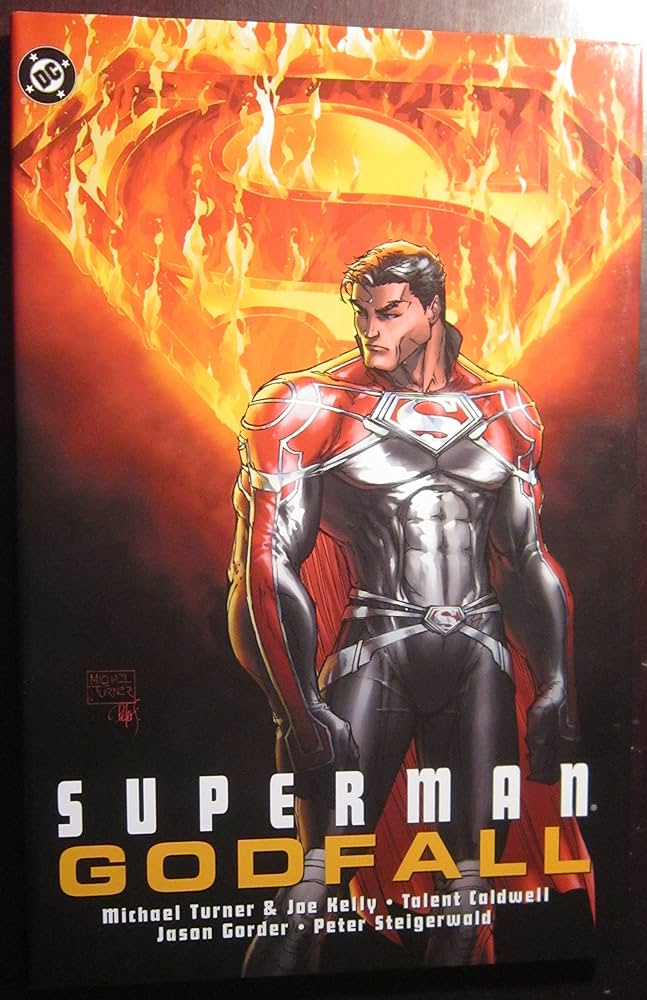
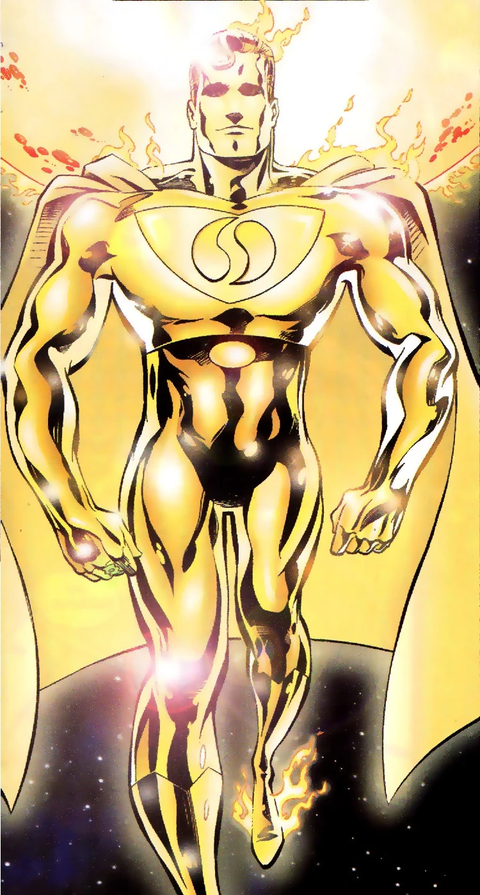
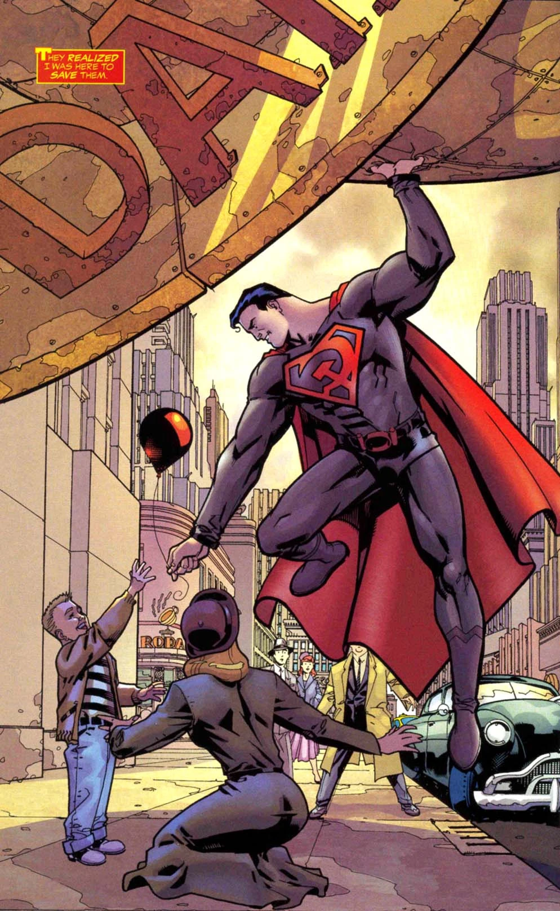
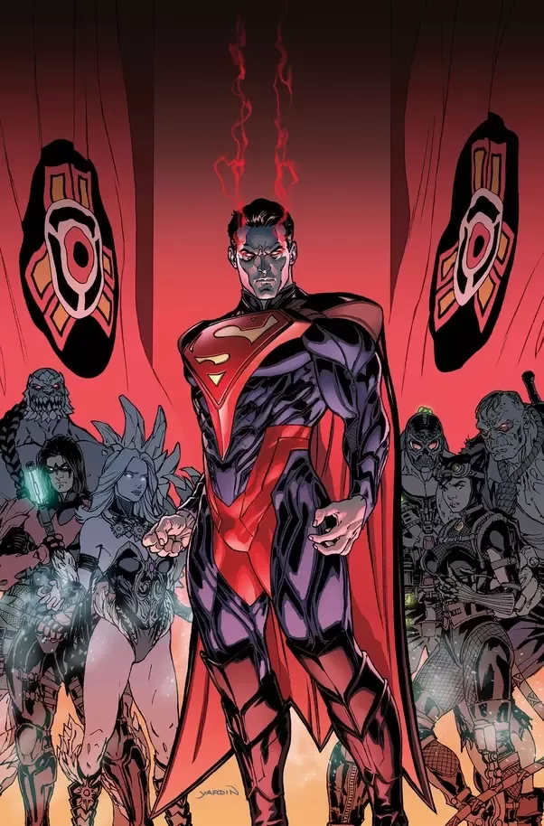
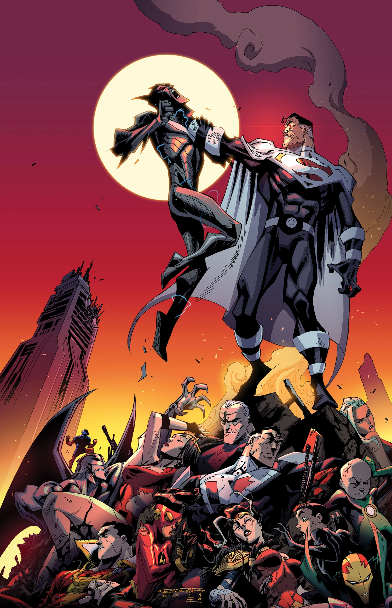
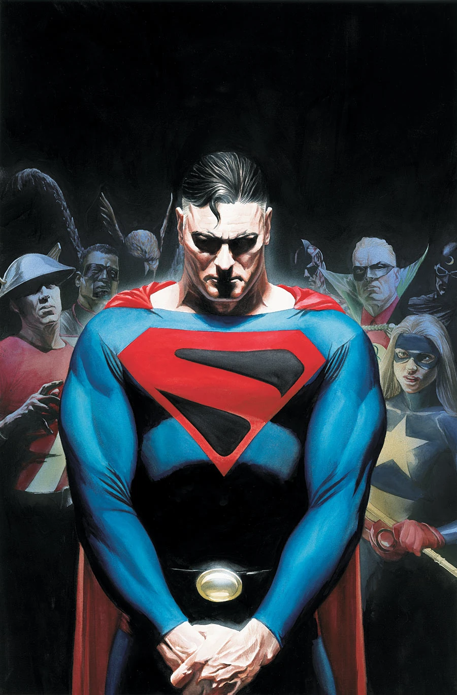

Classic Superman
Classic Superman is the original version of Superman that everyone knows and loves, Superman gains his powers from being an alien from the planet krypton and when exposed to the radiation of a yellow sun, has super strength, flight, super speed, heat vision and is invulnerable, his weaknesses are radiation from a red son, and the element known as kryptonite, making his first appearance in action comics #1
GodFall Superman
God fall Superman originates from Superman: Godfall which was a 2000s story arc in the comics featuring Superman in adventures through the bottle city of Kandor. The story revolved around an amnesiac Superman living with his wife, Lyla, in Kandor the capital city of his home planet krypton.
Superman One Million
The Superman of the 853rd Century survived by becoming the living extension of the Sun. He left the Earth somewhere in the late 21st Century when everyone he cared about died. He traversed the entire DCU, going beyond time and space, and has been said to have reached as far as Heaven and Hell themselves. His first appearance is in DC One Million #4
Red Son Superman
Red Son is an Elseworlds comic published in 2003. The three issue miniseries was written by Mark Millar with art by Dave Johnson and tells the story of what would happen if Superman had landed in the Soviet Union instead of America. His first appearance was Superman Red Son #1
Injustice Superman
Once a pure and noble superhero, Superman was driven insane by the Joker, who tricked him into murdering his pregnant wife, Lois, as well as destroying all of Metropolis with a nuclear device. After killing the Joker, Superman set out to create a new world order without crimes or atrocities, and over the years, became an unforgiving tyrant. His first appearance was the video game injustice gods among us by netherrealm studios
Lord Superman
this version of Superman grew tired of the back and forth with his rival president Luthor and killed him in the Oval Office of the White House, from that point his Justice league became known as the Justice lords and ruled the world with a tyrannical hand to rid the world of crime. His first appearance was Justice League season 2 episode 11 “A better world”
Kingdom Come Superman
this version of Superman lost his wife and all his friends when the villain known as the joker flooded the daily planet with joker venom, killing everyone within the building, as a result Superman retreats from the limelight into solitude until he is needed again years later to protect the world from violent heroes and villains. His first appearance is Kingdom Come #1
Flashpoint Superman

Flashpoint Superman is a version of Superman from an alternate timeline, and is a Kryptonian foundling captured by the United States Government and designated as Subject One in a military project. His first appearance is flashpoint:project #1